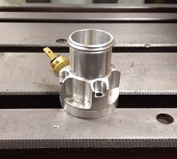

The history behind it
Cooling has been the big headache and a fast learning curve for me. But I can at least say it is under control, albeit not ideal though. I have endured 6 different pump impeller designs and countless radiator and path revisions. None came up to scratch. With each year of development came lots more power which maybe new news to most racers; it is not a direct correlation to thermal efficiencies.
Prototype 7075 impeller; 1 off 6
The Problem
The big alkilees heal is the liners and the open decks. The V4 Honda is a great block to work with but the open deck have pressure limitations. I distorted 3 blocks each within 20 minutes of use due to the sheer thermal and compression expansion rates in the combustion chamber. Both of which I knew nothing about when I started tuning. Yes, yes I know; If I had studied and drawn it in CAD in the first place I would of known all this but then I wouldn’t be building the bike: I would be talking about it down the pub instead.

Intricate temperature sensor housing manually machined
How it was done
Boring and shrinking the many sets of liners in was a full 35 hour weekend of eyes wide open flat out concentration on Freddy’s Bridgeport to get everything just right for shrinking and machining. All faces and bores within 10 microns and super slow cuts to minimise the distortion through heat and vibration from my primitive homemade boring tools and Freddy’s excellent engine jig. I eventually ended up using my manual Bridgeport to do the last 2 engines which I actually preferred because I wasn’t sleeping in an industrial unit in Peterborough next to a compressor; I was in my own workshop.
Front radiator: Coolant pipes were packed with sand and hot bent